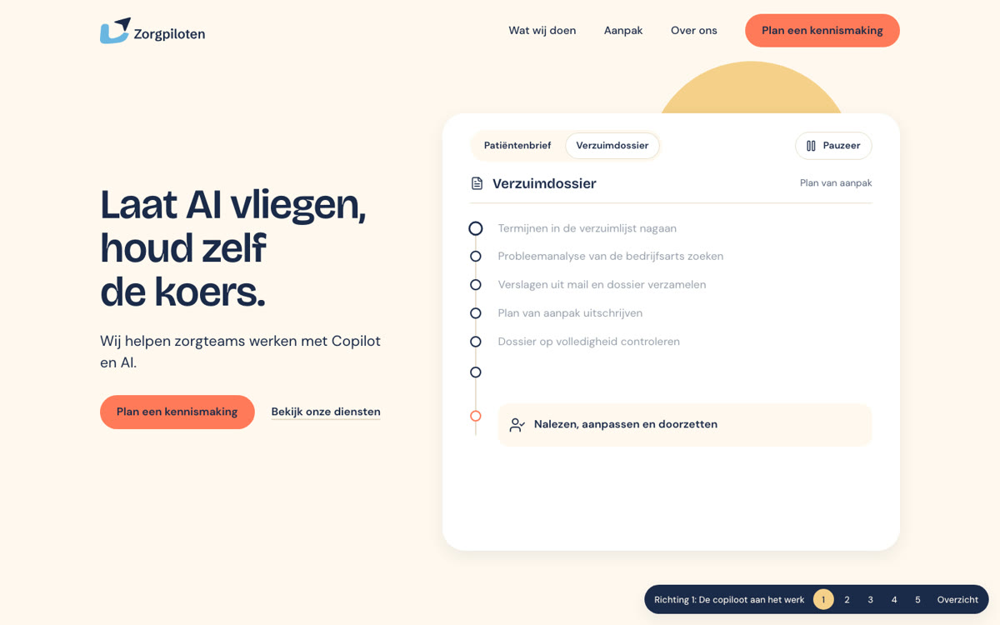
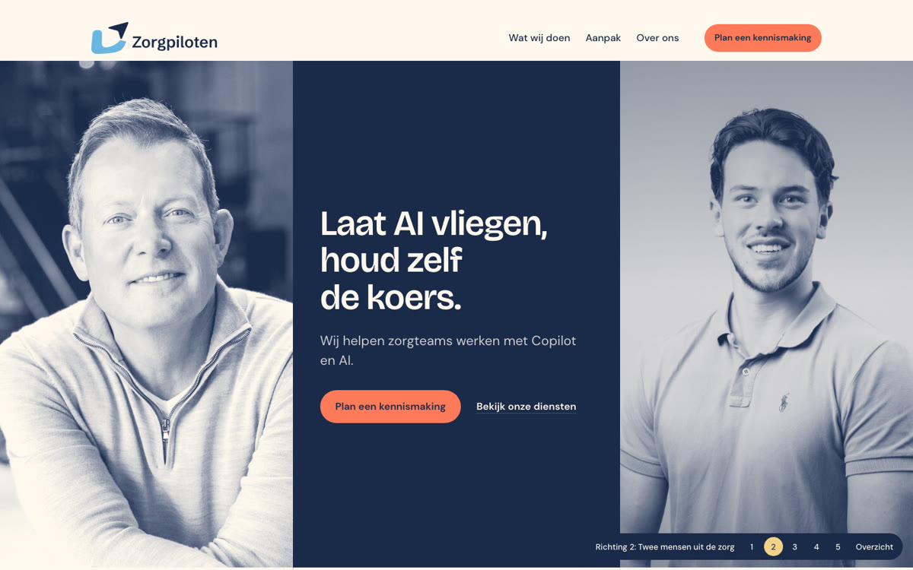
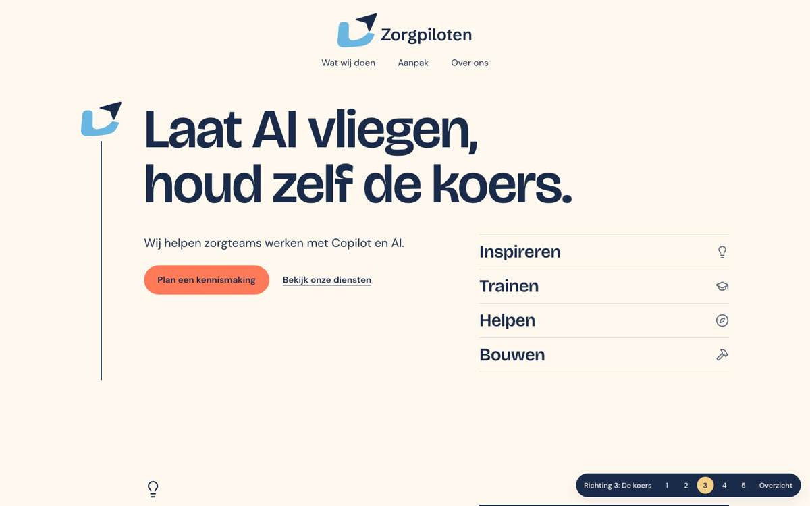
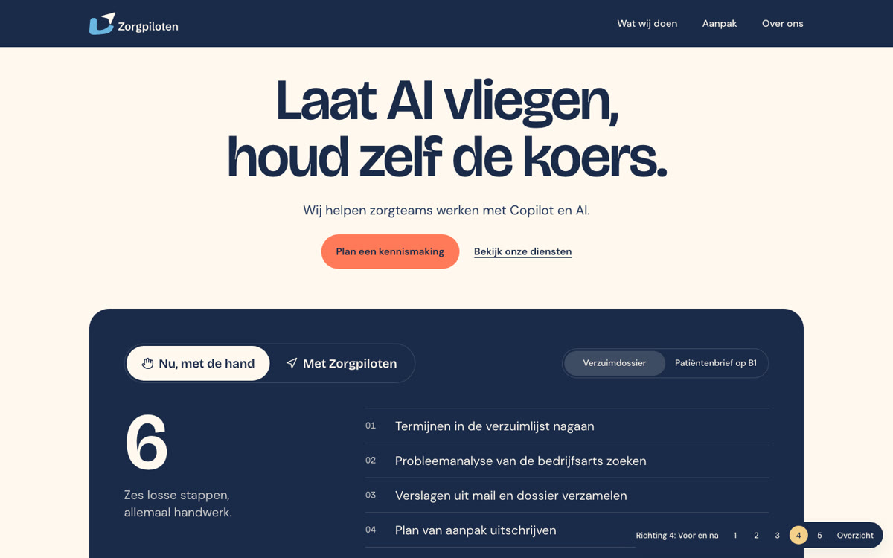
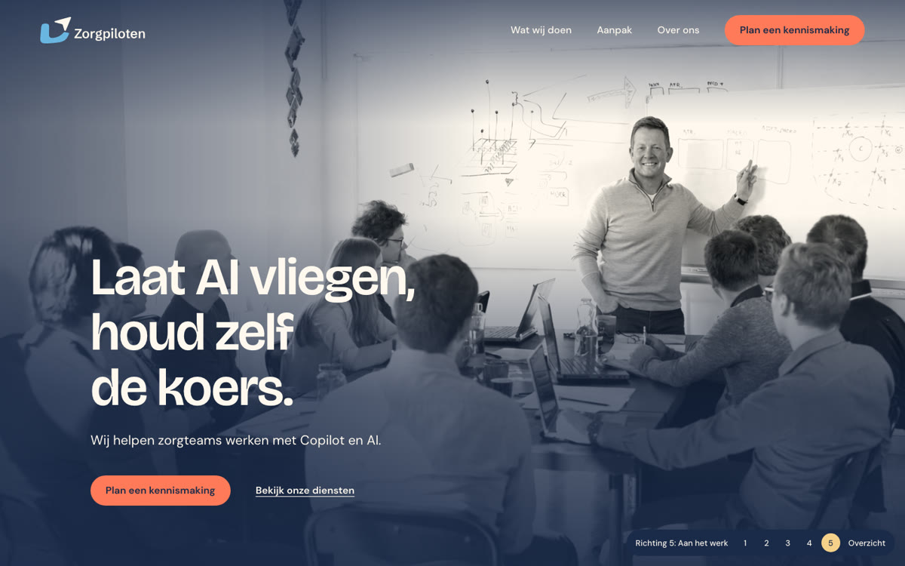

Vijf richtingen voor zorgpiloten.nl
Zelfde merk, zelfde woorden, vijf manieren om de waarde te laten zien zonder veel tekst. Klik er een open, scrol hem door en wissel rechtsonder naar de volgende.

Richting 1De copiloot aan het werk
De hero toont een agent die een patiëntenbrief voorbereidt en een professional die aftekent.
- Wat het draagt
- Het werk zelf, bewegend
- Foto's
- Alleen twee portretten

Richting 2Twee mensen uit de zorg
Hugo en Nick als tweeluik in één merkkleur, elk met één zwaar feit.
- Wat het draagt
- De mensen en hun achtergrond
- Foto's
- Portretten in duotoon

Richting 3De koers
Eén lijn loopt door de hele pagina en tekent zich bij het scrollen. Woorden, iconen, lucht.
- Wat het draagt
- Het merk en de route
- Foto's
- Geen

Richting 4Voor en na
Eén schakelaar: zes stappen handwerk vallen samen tot voorwerk klaar en aftekenen.
- Wat het draagt
- Iets om zelf te doen
- Foto's
- Alleen twee portretten

Richting 5Aan het werk
Echte foto's van echte sessies, groot en in één merkbehandeling. Eén zin per scherm.
- Wat het draagt
- Beeld van het werk
- Foto's
- Eigen foto's in duotoon